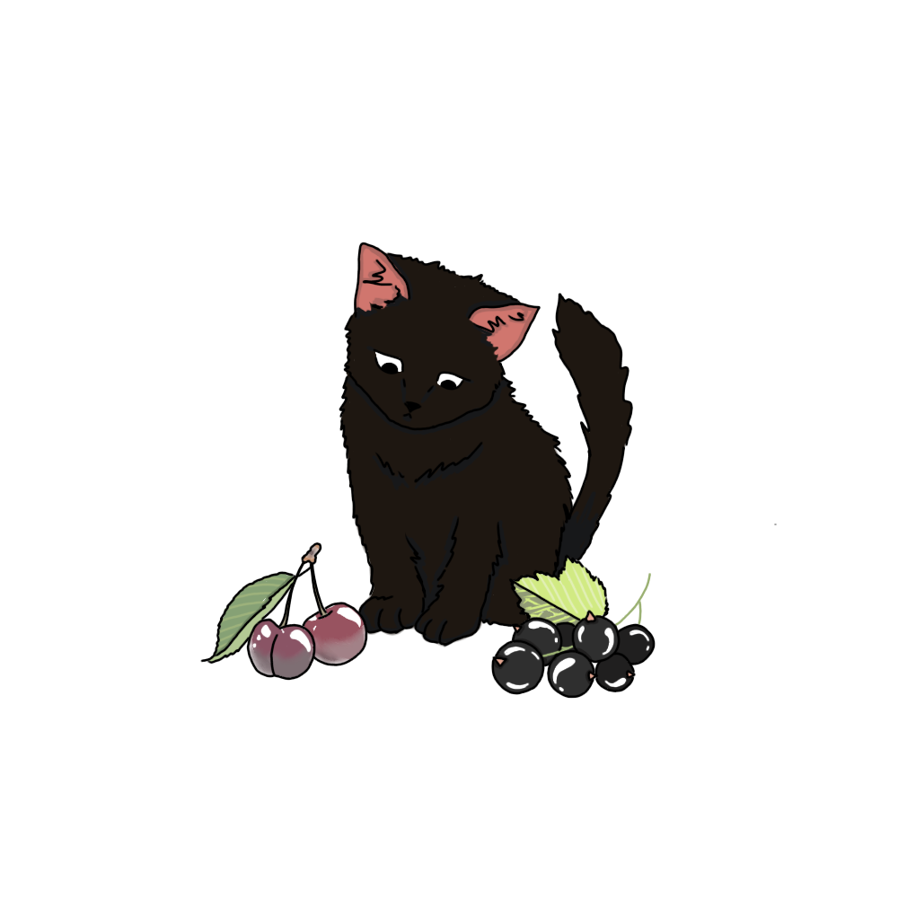

Глава V
Концепт
Мир для котенка уже не казался таким загадочным, как раньше. Он знал, что высокие зелёные великаны называются деревьями, а колючие заросли — это кусты. В этот день котёнок гулял вместе с белой кошечкой, они шли вдоль забора, наблюдая за людьми. Вдруг белая кошечка остановилась.
— Смотри,вишня созрела!
Котенок поднял голову. На ветке дерева висели маленькие красные шарики, некоторые из них уже лежали на земле.
— Вишня? — переспросил котёнок
— Да, а ты разве никогда не видел вишню? Котенок задумался. Конечно видел, ведь он много раз замечал эти красные ягоды. Однажды он даже играл с одной из них, катая её лапой по земле. Но слова такого он никогда раньше не слышал.
— Теперь видел, — важно ответил котёнок. Белая кошечка засмеялась.
— Ты ее и раньше видел!
— Теперь я знаю, как она называется. Весь остаток дня котёнок повторял новое слово — вишня, ему нравилось как оно звучит. На следующий день он отправился гулять один. Возле одного из домов рос небольшой куст, на котором тоже висели красные ягоды. Котенок обрадовался.
— О, вишня! Он подошёл поближе и гордо обошёл куст кругом. Позже вечером котенок рассказал маме о своей находке.

— А я сегодня нашёл ещё одну вишню.
— Где? котенок отвёл маму к кусту. Мама, внимательно посмотрев на ягоды, покачала головой.
— Это не вишня.
— Как это не вишня? — удивился котенок.
— Это смородина, — котенок растерялся.
— Она же красная.
— Верно.
— Круглая.
— Да.
— И тоже ягода.
— Да.
— Но почему это не вишня? Мама кошка улыбнулась.
— Похожие вещи не обязательно являются одним и тем же. Котенок нахмурился, ведь он был уверен, что понял слово правильно.
На следующий день котенок решил разобраться. Он встретил рыжего котёнка и спросил его: "а ты знаешь как отличить вишню от смородины?".
— Очень просто! — ответил тот, — вишня растет на дереве, а смородина на кусте. Следующие дни котенок стал внимательно наблюдать за ягодами, не видел, где они растут, какого размера, как выглядят листья рядом с ними. Спустя время он начал понимать разницу. теперь, увидев вишню, он сразу узнавал ее, а, увидев смородину, уже не путал с вишней.
Однажды вечером он сидел возле дома вместе с мамой.
— Когда я впервые услышал слово «вишня», подумал, что оно означает любую красную ягоду...
— Многие ошибаются так, когда узнают новые слова, — ответила мама.
— А потом оказалось, что слово обозначает только определённую ягоду! — Мама кивнула. Котенок взглянул на небо и задумался. он услышал слово, но сначала неправильно понял, что именно оно обозначает, и только спустя время слово и предмет наконец соединились в его голове. Котенок был очень доволен этим открытием.